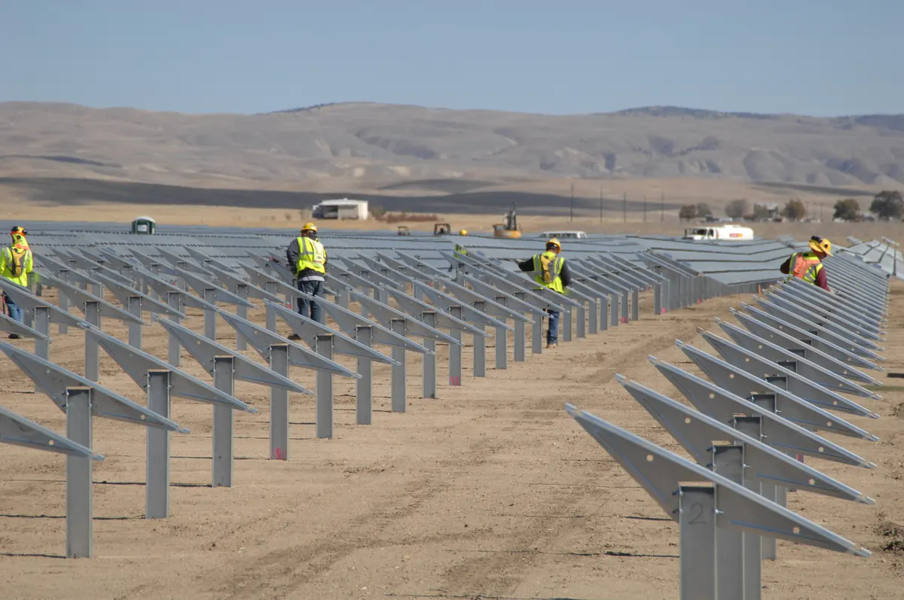

Cuántos paneles solares necesito: la fórmula y los datos de España
No hace falta ninguna tabla de fabricante. Con tu consumo diario en vatios-hora y las horas de sol pico de tu zona sale un número, y ese número decide si en enero tienes luz o tienes que arrancar el motor.
Esta guía contiene enlaces de afiliado: si compras a través de ellos recibimos una comisión sin coste adicional para ti, y no cambia lo que recomendamos. Cómo decidimos.
La fórmula, en una línea
Todo el dimensionado fotovoltaico de un sistema pequeño cabe aquí:
Vatios-pico necesarios = consumo diario (Wh) ÷ (horas de sol pico × 0,75)
El consumo diario es la suma de cada aparato por las horas que funciona de verdad: un frigorífico de compresor de 45 W no gasta 1.080 Wh al día, porque el compresor trabaja alrededor de un tercio del tiempo. Si no lo tienes medido, pasa tus aparatos por la calculadora de consumo antes de seguir. Con un consumo mal estimado, la fórmula devuelve un número inútil.
Qué son las horas de sol pico (y las que tienes de verdad)
Una hora de sol pico (HSP) equivale a una hora de irradiancia de 1.000 W por metro cuadrado, la condición en la que se mide la potencia de un panel. No son las horas de luz: un día de junio con catorce horas de claridad puede darte seis HSP, porque al amanecer y al atardecer el sol entra muy inclinado y aporta poco.
Estos son los valores que usa el sitio, tomados de PVGIS (Comisión Europea) para superficie horizontal:
| Escenario | HSP | Cuándo usarlo |
|---|---|---|
| Verano · sur | 6 | Solo si usas el sistema de junio a septiembre |
| Verano · norte | 4,8 | Cantábrico y Pirineo en temporada alta |
| Media anual | 4 | El valor por defecto para uso durante todo el año |
| Invierno · sur | 3 | Diciembre y enero en Andalucía o Murcia |
| Invierno · norte | 2 | El peor caso realista en España |
Valores orientativos de irradiación sobre plano horizontal según PVGIS. Un panel inclinado hacia el sur gana bastante en invierno respecto a estas cifras.
Por qué se divide entre 0,75
Los vatios-pico de la etiqueta se miden en condiciones estándar de ensayo: 1.000 W/m², célula a 25 °C y espectro AM1.5. Esas tres cosas casi nunca coinciden en el techo de una furgoneta. El 0,75 recoge cuatro pérdidas que se acumulan:
- Regulador y cableado. Un MPPT decente convierte al 95-98 % y el cable se lleva otro poco. Con un PWM la pérdida es mucho mayor.
- Temperatura de célula. Contraintuitivo pero decisivo: el panel produce menos cuanto más calienta. El coeficiente típico ronda −0,35 % por grado por encima de 25 °C, y una célula al sol en agosto llega a 60-65 °C, entre un 12 % y un 14 % menos de potencia.
- Orientación. Un panel pegado al techo está horizontal y el sol casi nunca cae perpendicular; con el sol bajo de invierno la pérdida por ángulo es considerable.
- Suciedad. Polvo, sal, polen y excrementos restan entre un 2 % y un 5 % si no limpias el cristal cada pocas semanas.
Con MPPT de calidad, panel inclinado y clima fresco puedes trabajar con 0,80. Con un plegable barato y regulador PWM, 0,65 se acerca más. El 0,75 es el punto medio honesto.
Ejemplos numéricos resueltos
Tomamos un consumo típico de camper con frigorífico, luces, bomba de agua, móviles y algo de portátil: 800 Wh al día.
- Uso anual (4 HSP): 800 ÷ (4 × 0,75) = 800 ÷ 3 = 267 Wp. Un panel de 220 W se queda corto los días medios; con dos de 150 W o un rígido de 300 W vas sobrado.
- Solo verano en el sur (6 HSP): 800 ÷ 4,5 = 178 Wp. Aquí sí basta un plegable de 220 W.
- Invierno en el norte (2 HSP): 800 ÷ 1,5 = 534 Wp. Tres veces más panel para exactamente el mismo consumo.
Dos casos más: un fin de semana con nevera pequeña, luces y móviles son unos 400 Wh al día, que en verano en el sur salen a 400 ÷ 4,5 = 89 Wp, así que un plegable de 100 W cumple. Una cabaña con 1.500 Wh al día y uso anual pide 1.500 ÷ 3 = 500 Wp, que en la práctica es un kit rígido de 600 W en el tejado.
El panel resuelve la generación, no el almacenamiento. La batería para pasar la noche y algún día nublado se calcula aparte: lo explicamos en la guía de baterías LiFePO4.
Panel rígido en techo o plegable orientable
El rígido atornillado al techo tiene una ventaja que no se puede comprar de otra forma: produce siempre, incluso conduciendo, sin que hagas nada. Su límite es geométrico: está horizontal y no se puede mover, así que en diciembre, con el sol a 30° sobre el horizonte, recoge una fracción de lo que podría.
El plegable resuelve eso. Perpendicular al sol y reorientado dos o tres veces al día, puede rendir entre un 20 % y un 40 % más que la misma potencia en horizontal durante el invierno. El peaje es la logística: sacarlo, apoyarlo, atarlo si hace viento y no dejarlo solo en un aparcamiento. En camper de uso anual la mejor combinación es rígido como base fija más un plegable de 100-220 W de refuerzo.
Por qué un MPPT rinde entre un 15 % y un 30 % más que un PWM
Un panel de 12 V nominal no trabaja a 12 V: su punto de máxima potencia está en 18-20 V. Un PWM funciona como un interruptor rápido y arrastra el panel hasta la tensión de batería, unos 13,5 V en carga. La corriente se mantiene, pero la diferencia de tensión se tira: de 18 V a 13,5 V pierdes cerca de una cuarta parte de la potencia disponible.
Un MPPT es un convertidor continua-continua: busca electrónicamente el punto de máxima potencia y transforma ese exceso de tensión en corriente extra hacia la batería. La ganancia real está entre un 15 % y un 30 %, y crece cuando hace frío (el panel sube de tensión), cuando la batería está descargada y cuando usas paneles de 24 V o residenciales con una batería de 12 V.
La diferencia de precio entre un PWM y un MPPT de 20 A es menor que los 100 Wp de panel extra que necesitarías para compensarlo. Si el presupuesto está justo, recorta en otro sitio antes que aquí.
Los tres errores típicos
Lo que sale mal
- Dimensionar con datos de verano. Calculas en agosto con 6 HSP, funciona de maravilla y en noviembre descubres que te falta la mitad. Calcula con la media anual como mínimo, y con datos de invierno si vas a usarlo todo el año.
- Ignorar la sombra parcial. Las células van en serie, así que la corriente de todas queda limitada por la peor. La sombra de una antena o de un ventilador de techo sobre una sola célula tumba la producción del panel completo, no una parte proporcional. Los diodos de bypass acotan el daño a un tercio del panel, pero no lo eliminan.
- Confundir vatios-pico con vatios reales. Un panel de 200 Wp casi nunca mete 200 W en la batería: en un buen día de mayo verás picos de 160-170 W un rato corto, y en un día gris de invierno puede no pasar de 30 W. Los Wp son una etiqueta de laboratorio para comparar paneles entre sí.
Qué panel comprar según el resultado
Con los vatios-pico ya calculados, cuatro configuraciones cubren casi todos los casos:
- Hasta 120 Wp: un plegable de 100 W. Fines de semana, nevera pequeña y carga de dispositivos.
- Entre 150 y 250 Wp: un plegable de 220 W. Es el punto dulce para camper de verano.
- Entre 300 y 450 Wp: dos paneles de 220 W en paralelo. Uso anual con consumo medio.
- 500 Wp o más: kit rígido de 600 W en techo. Cabaña, uso invernal o estación grande que recargar en un día.
Ver panel plegable de 220 W Dos paneles de 220 W Kit rígido de 600 W
Antes de taladrar el techo, lee la guía de instalación segura de un kit de 12 V: la sección de cable y el fusible pesan tanto como los vatios que compres. Y si prefieres saltarte el cableado, en la comparativa de estaciones portátiles tienes equipos con MPPT integrado a los que solo hay que enchufar el panel.
Preguntas frecuentes
¿Cuántos vatios de panel necesito para 800 Wh al día?
Con la media anual de 4 horas de sol pico necesitas unos 267 Wp, es decir dos paneles de 150 W o uno de 220 W apurando. En verano en el sur bastan 178 Wp y en invierno en el norte hacen falta unos 534 Wp para el mismo consumo.
¿Por qué se divide entre 0,75 y no se usa el vatiaje del panel directamente?
Porque entre el panel y la batería se pierde en torno a un 25 % por el rendimiento del regulador, la temperatura de célula, la orientación no perpendicular al sol y la suciedad. Los vatios-pico son un valor de laboratorio, no lo que entra en la batería.
¿Es mejor un panel rígido en el techo o uno plegable orientable?
El rígido produce sin que hagas nada y funciona en marcha, pero está horizontal y no se puede orientar. El plegable orientado al sol puede rendir entre un 20 % y un 40 % más en invierno, a cambio de sacarlo, colocarlo y vigilarlo. Lo habitual es combinar rígido como base y plegable como refuerzo.
¿Cuánto más rinde un regulador MPPT que uno PWM?
Entre un 15 % y un 30 % según la temperatura y la diferencia entre la tensión del panel y la de la batería. El PWM arrastra el panel a la tensión de batería y desperdicia la diferencia; el MPPT busca el punto de máxima potencia y convierte ese exceso de tensión en corriente aprovechable.
Redacción de Estacionportatil. Los valores de radiación proceden de PVGIS y los factores de pérdida son los mismos que aplica nuestra calculadora. Puedes leer cómo calculamos y qué no hacemos. Última revisión: septiembre de 2026.